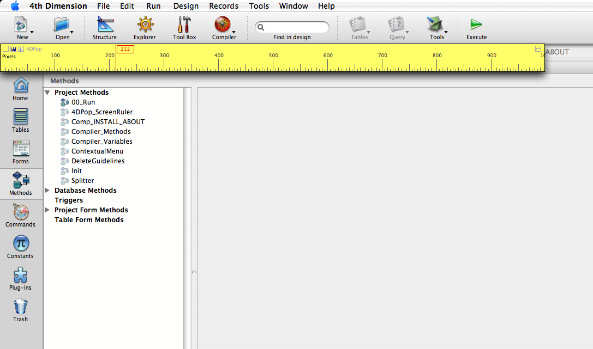
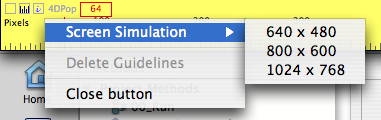

インストール
"4DPop_Rulers.4dbase"フォルダまたはそのエイリアスを、データベースストラクチャの "Components" フォルダに配置します。

ルーラを表示するには "4DPop_ScreenRuler" メソッドを実行します。
"4DPop"コンポーネントを使用している場合は、ルーラツールがパレットに表示され、クリックすればルーラが表示されます。

使用
デフォルトで、高さ100ピクセルの水平方向のルーラが、メニューバーまたはツールバーの下に表示されます。
ボタン
| ルーラを閉じる | |
| 水平方向と垂直方向のルーラを切り替える | |
| ヘルプページを表示する | |
| ルーラのリサイズ | |
| + Opt/Alt を押すと、スクリーンのサイズに合わせてリサイズ |
ルーラを移動するには、空のエリアをクリックします。
Option (Mac OS) または Alt (WIndows) を押しながら空のエリアをクリックして、ガイドラインを作成できます。
ルーラが水平の場合ガイドラインは縦、ルーラが垂直の場合ガイドラインは横方向です。
ガイドラインはルーラの縦横を切り替える際に記憶されます。それらはルーラを閉じる際に削除されます。
ガイドラインの数に制限はありません。
ガイドラインをクリックして移動できます。Option/Altを押しながらクリックすると削除されます。
"4DPop" ラベルをクリックするとアクションメニューが表示されます:
"スクリーンのシミュレーション" を選択すると、3つの中から選択したスクリーンサイズをシミュレートする縦横のガイドラインが置かれます。
"ガイドラインを削除" を選択すると、すべてのガイドラインが削除されます。
ソースコード
このコンポーネントはコンパイル版で提供されますが、コンポーネントフォルダ内の"Sources" フォルダにはソースコードが含まれています。